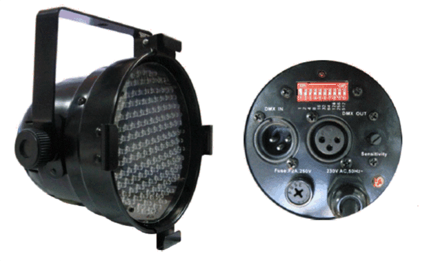
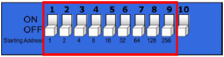
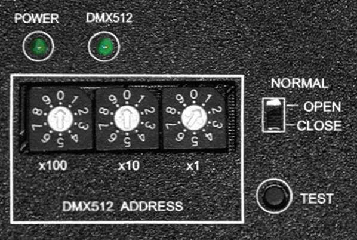
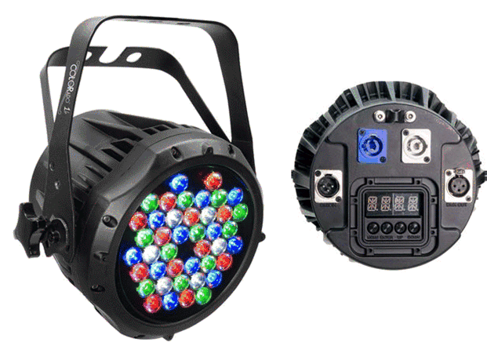
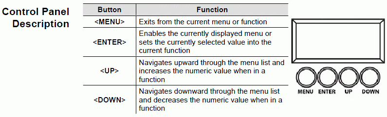
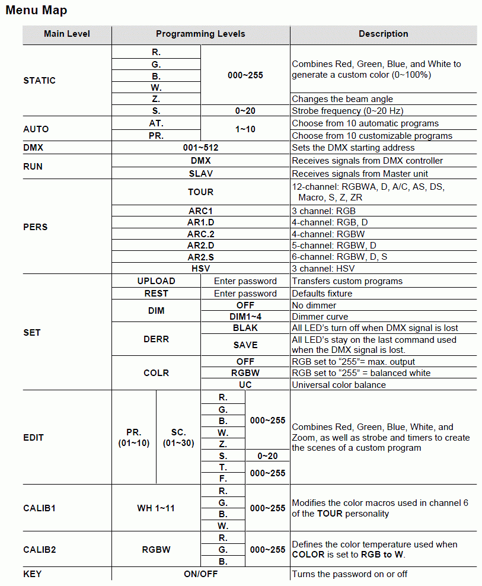

DMX How to set the addresses on the fixtures
Setting the DMX address or channel on the fixture is one of the most important things to do.
For users that are familiar with the digital world it is a logical and easy task but other it may be a bit difficult to until it has been tried a couple of times.
The way to set address are different from fixture to fixture and when the fixture have more modes in which it can operate then it get a bit tricky.
On this page DIP switches, rotary switches and a digital menu entry are shown.
So first of all “READ THE MANUAL FOR THE FIXTURE”.
Dip switches.
This is the most confusing way of setting addresses for users that are not familiar with bits but is also the most common addressing device for simple fixtures.

The dipswitch, here the red block on the back side of the fixture, need to be studied carefully.
Look for the markings like “on”, “off”, “1” and “0” or other things that indicates when the switches are on or off.
This is different from fixture to fixture.
It is not so the up is “on” and down is “off” they can be inverted so have a look in the manual if it is not clear marked.
To set addresses from 1 to 511, 9 switches are needed but many fixtures has more and the extra switches. These switches are normally used to set the fixture in different modes and it may be stand alone / sound modes so therefore it is important to set these switches correct.

In this figure switch 10 is use to set the fixture in stand alone mode, found in the user manual, so this switch must be off to operate the fixture in DMX mode. If it is on the fixture will not react on any DMX values send to it.
Under the switches the number 1,2,4,8,16 …. 256 are shown this is a help but they are not always shown.
To set address a bit of calculation are needed.
Switch 1 gives the address value 1 and switch 2 the address value is increased with 2.
Each switch double the address.
In practice this means:
To set the fixture to address 3 switch 1 and 2 most be on.
1 + 2 = 3.
To set the fixture to address 5 switch 1 and 3 most be on.
1 + 4 = 5.
To set the fixture to address 20 switch 3 and 5 most be on.
4 + 16 = 20.
And so on.
This can be a bit confusing and is often the step where errors are made.
In FreeStyler this calculation is made automatically when a fixture are added and it is just to set the switches as FreeStyler shows.
Alternative there are a lot of PC programs and “aps” for smart phones that can do this calculation.
A stand-alone calculetor for your PC can be downloaded here. DMX calculator
Rotary switches.
This is an way to set the address with decimal values. It is not the most commen way to do it but it exist.
Here the idea is to set the values from 0 to 9 on each decade.

On the figure this fixture is set to address 001.
To get address 235 the switches must be set to.
X100 = 2
X10 = 3
X1 = 5
Address = 2×100 + 3×10 + 5×1 = 235.
Though it is possible to set values higher than 511 then it is not allowed.
DMX only support addresses from 1 to 511. This gives, 511 + the start frame, 512 addresse.
When DMX1024 or higher is mentioned then it only means more chains with 512 addresses on each.
DMX1024 is 2 chains with 512 addresses.
Digital Menu
Here a Chauvet Colorado Zoom is used as example.

Most of fixtures with menus are with a intuitive interface but they also normally have more modes that can be set and therefore READ THE MANUAL.

In the menu there two things to search for it is the addresses, here in this menu “DMX”, and mode, here “PERS”
But as mentioned above READ THE MANUAL then you know what to look for.
So find the DMX Addressing menu and change the value with the up/down buttons.
And find the wanted mode here “PERS” and for the fun of it, it could be a simple RGB mode, ARC1.
Remember that the mode must match the fixture in FreeStyler.
If these two settings don't match then a address overlab will occur and the fixture control fail.
See. DMX Addresses.

{kind=link}
{kind=link}
{kind=link}
{kind=link}
{kind=link}
{kind=link}